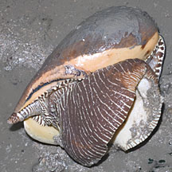
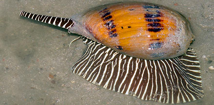
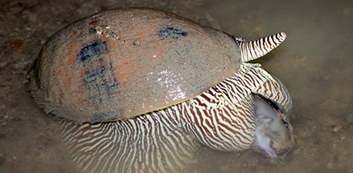
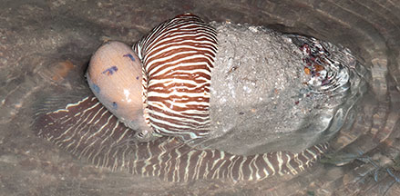
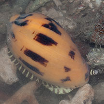
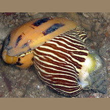

|
|
| shelled snails text index | photo index |
| Phylum Mollusca > Class Gastropoda > Family Volutidae |
| Baler
volute Melo melo Family Volutidae updated Sep 2020
Where seen? This magnificent large snail sometimes seen on our Northern shores and is more common on undisturbed shores. It is usually found on muddy bottoms, near mangroves and seagrasses. It is also called the Indian volute. Features: 15-20cm. Shell is rather thin and quite fragile for such a large snail. Colour beige to orange, sometimes with brown bands, others without any distinct markings. No operculum. Body huge fleshy, brown with white stripes, a large foot which is plain and pale on the underside. It has a pair of slender tentacles, a long siphon that sticks out of the notch at the front of the shell, and a long proboscis, both banded brown and white. |
 Beting Bronok, Jun 06 |
 Beting Bronok, Aug 05 |
| What does it eat? This predator and hunts other snails, moving about on the surface. Like other volutes, it uses its large foot to enclose the prey. So far, we have seen them eating Noble volutes and also Gong-gong snail. |
 Baler snail eating a Noble volute! Beting Bronok, Jun 14 Photo shared by Marcus Ng on flickr. |

| Volute babies: In members of the Famliy Volutidae, the male fertilises the female internally. There is no free-swimming larval stage and crawling juvenile snails emerge from the egg. As a result, volutes have a restricted range and local populations can be wiped out by over-collection. |
|
 A much smaller one riding on the back of a bigger one. Prelude to mating? Beting Bronok, Jun 10 |
 Small juvenile snail. Beting Bronok, Jul 08 |
| Human uses: This snail is collected for
food even, sadly, on Singapore shores. Elsewhere, the empty shell
is used elsewhere to bail
out water from 'sampans' (little boats used by fishermen), also to
measure out sugar, salt and flour in local markets. "Pearls" may form inside this snail when something enters the snail's shell and gets covered by shell material. The "pearl" is not lustrous as it contains no nacre, but are usually very round and can be as large as a golf ball. The colours of the "pearl" tend to fade over time so they are not considered precious gems. Status and threats: The Baler volute is listed as 'Endangered' in the Red List of threatened animals of Singapore due to habitat loss. Also threatened by indiscriminate fishing with nets. It is also eaten. Wildfilms had an encounter with a collector who took one from Changi to eat. The 1994 Red Data Book of Singapore states "Thought to have been exterminated from our water, but a recent isolated sighting confirms their continued presence". |
| Baler volutes on Singapore shores |
On wildsingapore
flickr
|
| Other sightings on Singapore shores |
 Eating a Gong-gong snail? Beting Bronok, Jul 08 Photo shared by Loh Kok Sheng on flickr. |
Links
References
|